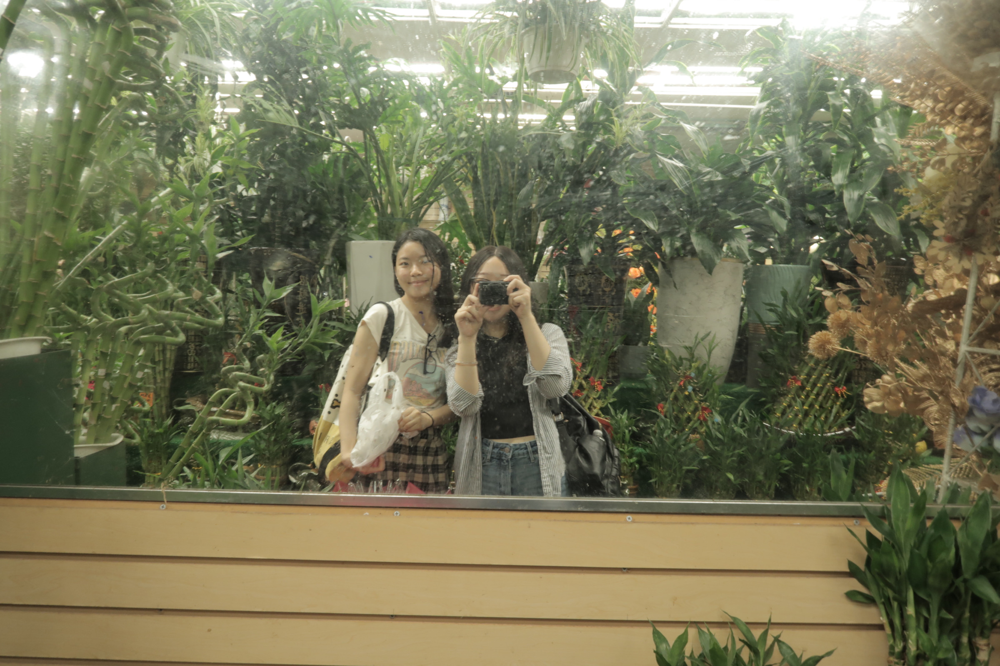
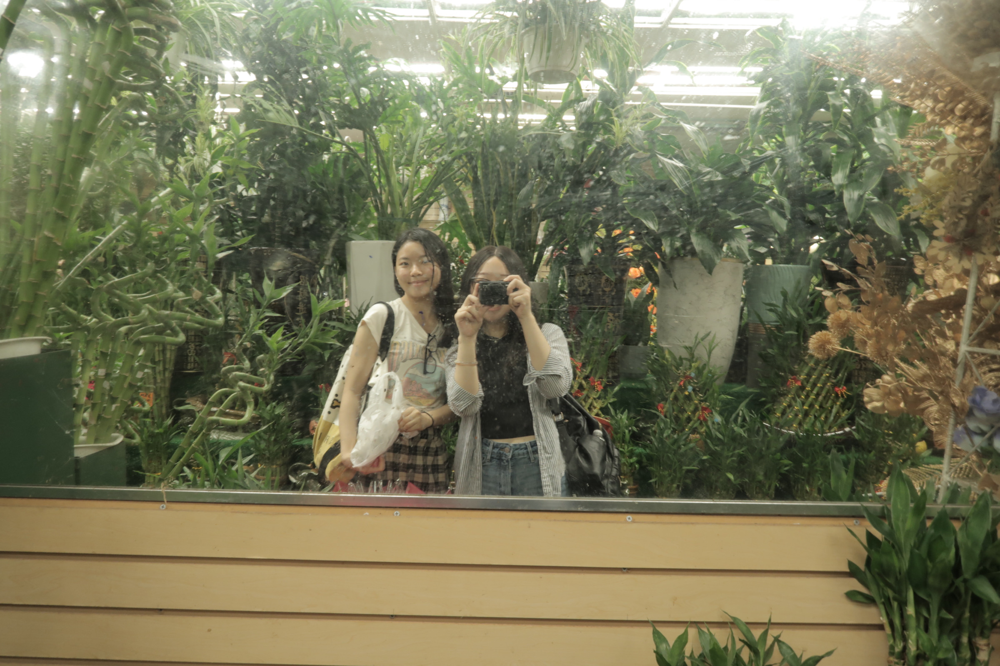

TITLE
DATE
TEXT
TITLE
DATE
TEXT
Reunion with Old Friends
August 7, 20203
Iqra and Rose met me at Penn Station before my train. I haven't seen Iqra, my summer roommate, in 5 years. And, the last time I saw Rose was freshmen fall when she visited Philly for the Lauv concert. I missed them so much. It's funny how you can go years without seeing someone but when you do everything feels the same. I felt like we were 17 again, laughing and just enjoying each other's company. Seeing them makes me excited and hopeful for the future. Iqra will be in DC working and starting her MPH program. Then, she will move to NYC to finish that Master's degree. Rose will be working in Chicago for the year - another reason for me to visit! I can't believe my friends are all growing up and starting their first big girl jobs. I know it also means that I am growing up too. In a year, I'll be starting my first full-time job as well. I'm excited for that. I want to take this next year to travel and visit my friends in different cities.
Exploring Flushing with Wendy
August 7, 2023
Wendy and I ate our way through Flushing! We were sooo full from all the food. First, we stopped at NY GoGo Fast Food for a scallion pancake. Then, we went to New Flushing Bakery to share an egg tart. It was the perfect texture, cripsy crust and soft center. On the way to our next place, we passed by Yomie's Rice X Yogurt which was giving out samples. It was my first time trying purple rice and yogurt. I definitely want to go back next time I'm in Flushing. We then went to Fu Yuan for curry fish balls and Joe's Steam Rice Roll for shrimp rice rolls with scallions and lettuce. We walked around Flushing and hung out in the Queens Crossing food court for a bit before heading to Tangram Mall which is a residential and commercial building. We had the hardest time finding Soft Swerve. We shared a purple yam soft serve and the flavor was string but honestly a little too sweet. Then Wendy and I headed to Manhattan and watched "Sound of Freedom." It was really good and had my attention the whole time. Both of us agreed that it wasn't what we were expecting. I'm really glad Jacqueline told me that she watched it, because otherwise I don't think I would have really even known about the movie. Wendy and I hung out near Penn Station before she headed back to Philly.
 

NYC Day with Sarah
July 31, 2023
Sarah and I spent the day together before she leave to London to do her Master's program in art history for a year. Sarah and I had lunch at Up Thai in the Upper East Side and then got to visit some of the places I'm drawing from my design internship. We went to Ralph's and got iced teas and then went to sit on the grass in Central Park. I brought my picnic blanket from Penn. Probabaly the most useful piece of merch I've gotten from college. We chatted about whatever and everything from my autoimmune disorder (Sarah was one of the first to know), relationships, how we're excited but also nervous for the next year, how we are glad that we get to do this next year together in our programs even though we'll be an ocean apart. A fluffy brown dog ran up to us in the middle of my cry session and Sarah thought it was a bear. We then went to the Museum of Natural History, both our first time going since we usually go to art museums. We got to live our "Night at the Museum" dreams and got to see "Dexter" and "Dum Dum". We also got to see the new Gilder Center; it's so calming and beautiful. We then sat on a bench outside and chatted before taking the subway. We talked about how we thought a day felt like there would've been more time together. We reflected on how we kept in touch through the pandemic. How she would show me around her town on the walk to get coffee as I was in my dorm cooking dinner. That time we made gnocchi together on Zoom. We chatted about my plans to visit London in the spring or after my graduation. I miss Sarah and living so close and having random conversations in her living room.
Sushi with the Family
July 30, 2023
Louis returned home for a weekend and we went out to all-you-can-eat sushi with our parents and our cousin Nick. I made the mistake of ordering too many California rolls and got full before the sashimi even arrived. I don't think my family will let me live that one down any time we got out for sushi or KBBQ.

DAY in NYC
July, 15, 2023
Met up with Louise, Ani, and Vanessa in the city. Louise and I got brunch with her sister Lucy and Roxanne at an Italian place. We chatted about how we are all in our final year of our Master program. It's comforting to know that we are all going through similar things and Louise and I are both studying product design. It's sometimes weird to think that I am now older than Louise was when we first met. I met her in my freshmen year right before the pandemic through our undergrad Architecture group where she became my mentor. Afterwards, I met up with Ani and we got to catch up near NOHO. We spent the day window shopping and got ice cream from Morganstern Bananas. It was delicious especially on one of the hottest days. I learned that Ani and I have similar things that catch our eye in terms of style and asthetics. I felt so relaxed not having an agenda and just going wherever. After Ani left to catch her train, I visited Vanessa's new apartment! She showed me the vlog recap of senior year she was working on before we went to the Thai restaurant by her place. We had a great conversation about what we want to do in our careers and how we want to build in being creative into those role. It made us excited about the future. I feel so priviledged to have friends from the very beginning of my college experience. I met Vanessa the first week of college on a tour that the school organized to visit Chinatown. We found out we both lived in the same dorm and got involved in the theatre on campus.
4th of July Traditions
July 4, 2023
The 4th is a timemarker for my family. The past few years I have returned home for the summers to spend time with my parents and cousins. The 4th is the only summer holiday when my parents take off from work, so it is a day for just us. The day is usually slow, relaxed, and unplanned besides grilling and fireworks. Going to Tanner Park on this day is a tradition. After dinner in our backyard, we go to Tanner Park for live music, the boardwalk, and fireworks at sunset. I also taught Mom how to take a .5 selfie. This 4th I reflected on how much of a difference I feel about where I am at in life compared to last year.
HBS
June 12-17, 2023
Spent the week learning about what it's like to be an MBA student at HBS. Met a lot of awesome people and had 11 case method classes in topics including entertainment, non-profit, operations, finance, and social media. The week was definitely a lot of hard work, but really what I remember was having a lot of fun and growing. I feel like I got to better understand what I want out of a future career and how an MBA can fit into that vision.
BIRTHDAY
May 19, 2023
Turned 22 and got to celebrate with my family! Spent most of the day sick and with a headache, but it was nice being home after I was abroad for my birthday last year. Mom got me an ice cream cake from Carvel which was very nostalgic. I can't remember the last birthday I had an ice cream cake.
GRADUATION
May 15, 2023
I graduated Summa Cum Laude from the University of Pennsylvania with a Bachelor of Arts in Architecture.